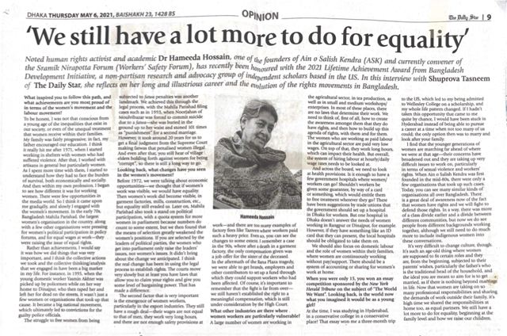
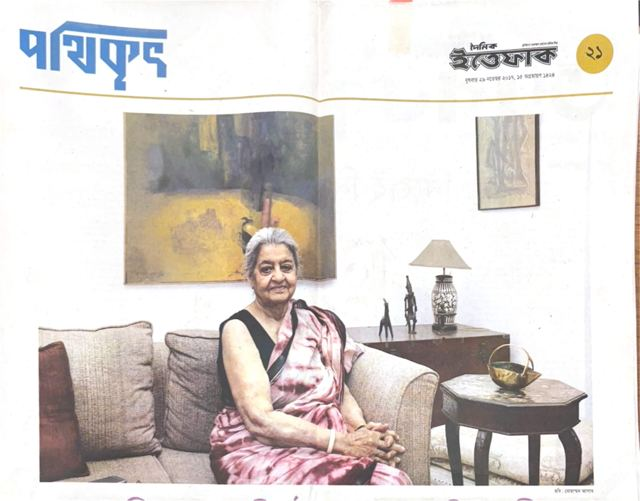
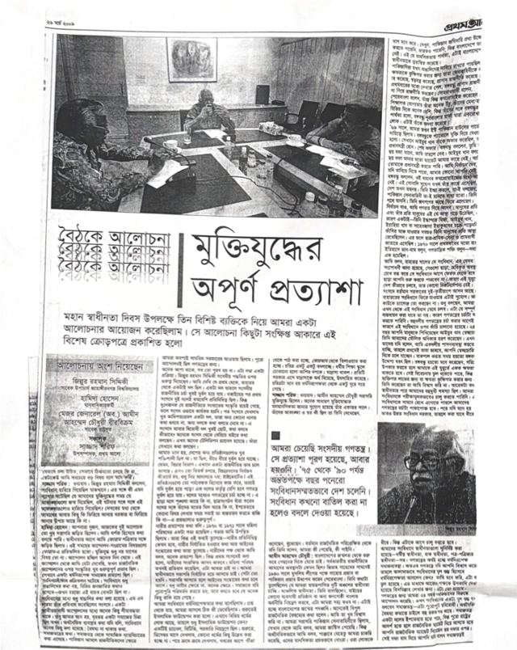
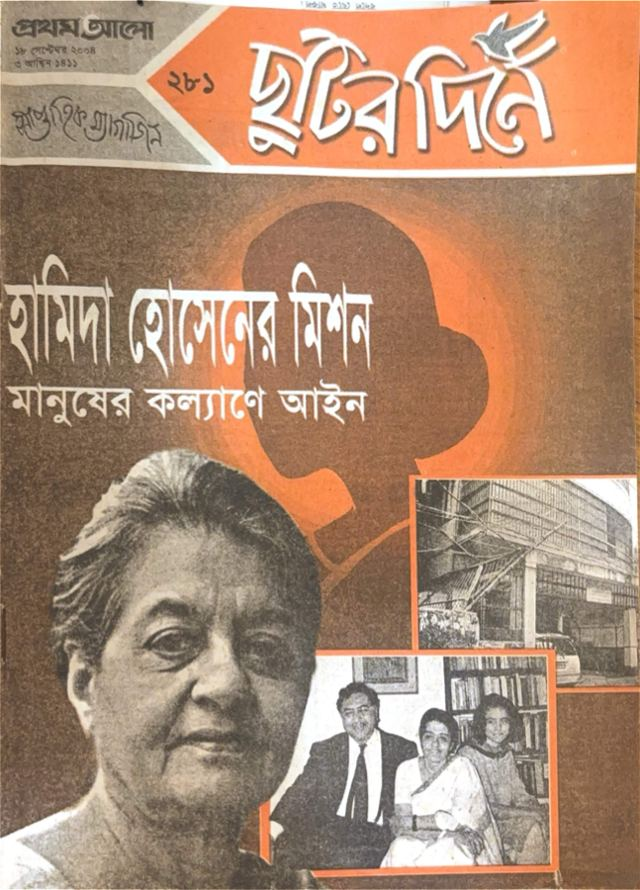
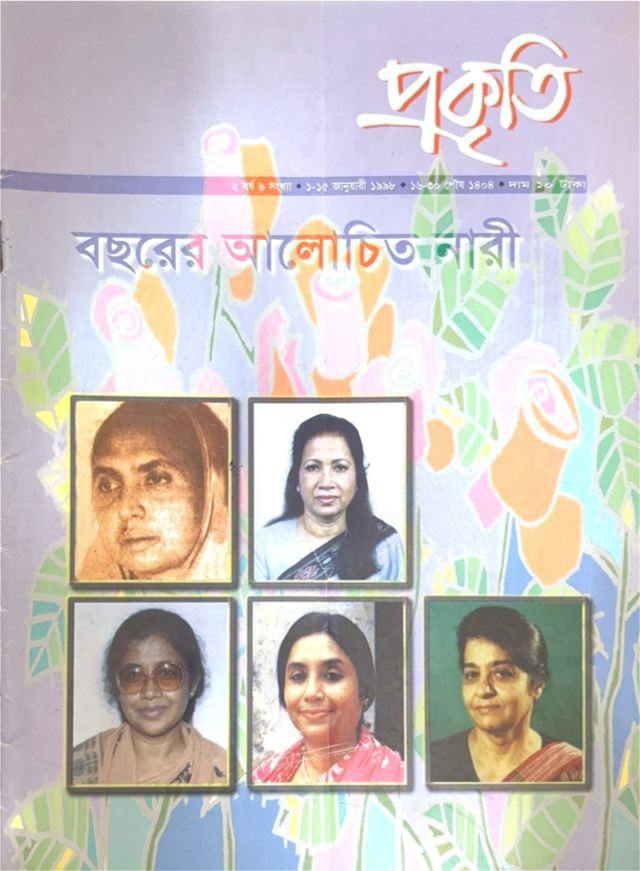
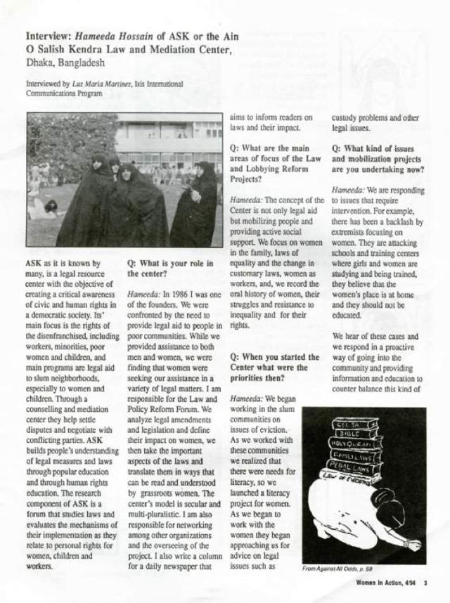
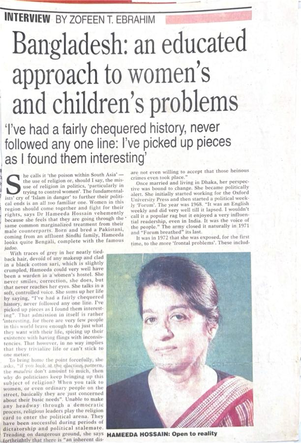

Interviews
Conversations with journalists, scholars and oral-history projects, in print, on air and online.
- Bangladesh at 50: Women’s Empowerment: From Home to Factory and Beyond ↗ Transcript of a panel at the Mittal Institute's Bangladesh at 50 conference. She argues that women's gains in education, work and visibility over 50 years are uneven across class, ethnicity, location and religion, and traces how women organised against discrimination and violence.
-
 বেলা অবেলা সারাবেলা (Bela Obela Sarabela (Morning, Noon and Night)) ↗
An episode of the Desh TV conversation programme Bela Obela Sarabela in which Hameeda Hossain talks with actor and politician Asaduzzaman Noor.
বেলা অবেলা সারাবেলা (Bela Obela Sarabela (Morning, Noon and Night)) ↗
An episode of the Desh TV conversation programme Bela Obela Sarabela in which Hameeda Hossain talks with actor and politician Asaduzzaman Noor.
-

We still have a lot more to do Interviewed after receiving the BDI Lifetime Achievement Award, she looks back on the Yasmin and Noorjahan cases, factory disasters such as Tazreen and Rana Plaza, and the rights of garment, farm and domestic workers. - A Conversation with Dr Hameeda Hossain ↗ Published after she received BDI's 2021 Lifetime Achievement Award, this interview covers her education in Sindh and at Wellesley, journalism and Forum, ASK, her writing, work against violence on women, her weavers research and her view of Bangladesh at 50.
- An Equal World Is an Enabled World ↗ For International Women's Day 2020 she discusses feminism as a struggle for justice across class and ethnicity, misogyny, reporting of violence, indirectly chosen women MPs, unenforced laws such as on harassment committees, and the role of the media.
-

মানবাধিকার প্রতিষ্ঠার এক অভিযাত্রা (A Journey to Establish Human Rights) A profile in Ittefaq's Pathikrit (Pathfinder) feature covering her childhood in Hyderabad, Sindh, Wellesley, Oxford University Press, Forum, Karika, the founding of ASK and her books, including The Company Weavers of Bengal and No Better Option? -
 Life in Hyderabad, Sindh During 1947 ↗
A short 1947 Partition Archive video in which she recalls her childhood in Sindh: her father, a judge who educated his daughters, a school emptied of Hindu, Sikh and Christian pupils after Partition, and helping at her grandmother's refugee clinic.
Life in Hyderabad, Sindh During 1947 ↗
A short 1947 Partition Archive video in which she recalls her childhood in Sindh: her father, a judge who educated his daughters, a school emptied of Hindu, Sikh and Christian pupils after Partition, and helping at her grandmother's refugee clinic.
- Bengali Intellectuals Oral History Project: Interview with Hameeda Hossain ↗ A long oral history covering her childhood in Sindh, Wellesley, publishing work, editing Forum in 1960s Dhaka, the events of March 1971, return to Bangladesh in 1972, Oxford research on Bengal weavers, exile after 1975, Karika and founding ASK.
-
 Women Speak on Secularism ↗
A video interview from Dhaka recorded by Marieme Helie Lucas for the Secularism Is A Women's Issue series, part of a set of conversations with feminists on secularism, fundamentalisms and women's rights.
Women Speak on Secularism ↗
A video interview from Dhaka recorded by Marieme Helie Lucas for the Secularism Is A Women's Issue series, part of a set of conversations with feminists on secularism, fundamentalisms and women's rights.
-

মুক্তিযুদ্ধের অপূর্ণ প্রত্যাশা (The Unfulfilled Hopes of the Liberation War) An Independence Day roundtable in Prothom Alo on hopes of the Liberation War that remain unmet. The participants discuss the constitution, democracy, secularism and the place of women since 1971. -

হামিদা হোসেনের মিশন: মানুষের কল্যাণে আইন (Hameeda Hossain's Mission: Law for People's Welfare) A profile in Prothom Alo's weekly Chutir Din magazine that follows her life from Sindh and Wellesley to Dhaka, Forum, 1971, Oxford and the founding of ASK, alongside her work on slum evictions, legal aid and CEDAW reporting. -

বছরের আলোচিত নারী (Most Talked-About Women of the Year) A cover feature naming five women of the year, including Matia Chowdhury, Salma Khan, Shamsera Hasan and Ferdousi Majumdar. In her section she talks about handlooms and women in the textile trade, and ASK research on laid-off garment workers, migrant women, family law and violence. -

Interview: Hameeda Hossain of ASK In this Q&A she describes founding Ain o Salish Kendra in 1986, its legal aid and Law and Policy Reform Forum, its response to extremist attacks on women and NGOs and to village stonings over adultery, and her own path from Pakistan to Bangladesh. -

Bangladesh: an educated approach to women’s and children’s problems In this interview she discusses religion in politics, ASK's legal work, the case for a uniform family code, her years editing Forum and in 1971, and ASK's drop-in centres for working children and the garment-industry child labour agreement.
Nothing matches.